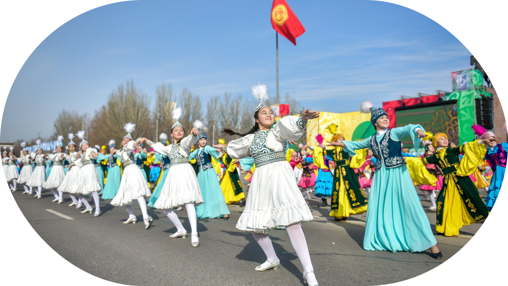
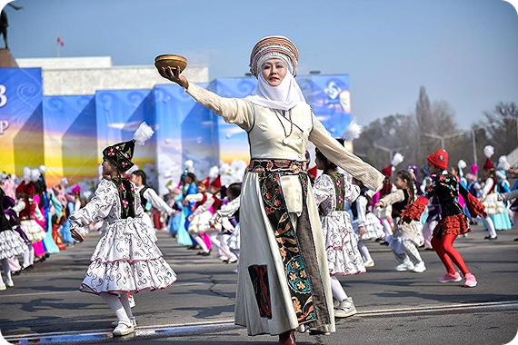
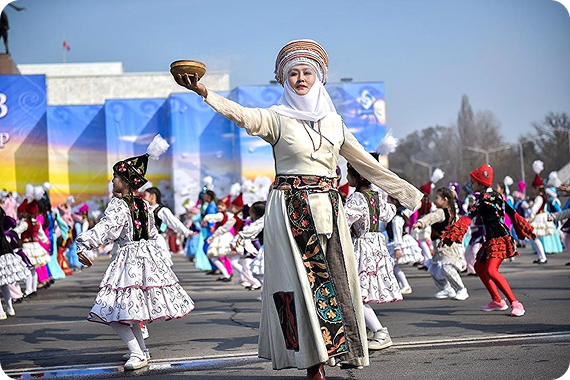
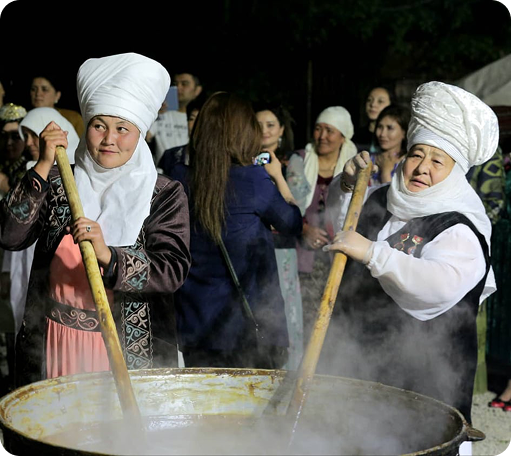
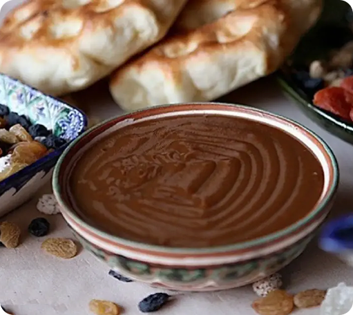
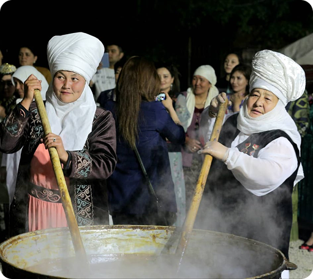
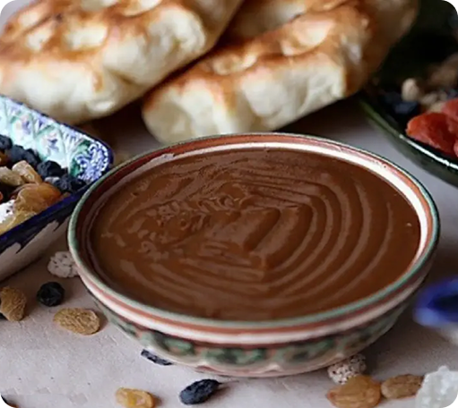

Нооруз – эң байыркы майрамдардын бири.
Нооруз – көптөгөн өлкөлөрдө, анын ичинде Кыргызстанда белгиленип келген эң байыркы майрамдардын бири. Ал жаздын келишин, жаратылыштын жаңылануусун жана күн календары боюнча жаңы жылдын башталышын билдирет. Бул күн кубанычка, конок тосууга жана муундан-муунга өтүп келген өзгөчө салттарга бай.
Майрамдын тарыхы жана мааниси
Нооруз 3000 жылдан ашык убакыт мурун пайда болуп, Борбор Азия, Иран жана Жакынкы Чыгыш элдеринин маданиятынын бир бөлүгү болгон. Перс тилинен которгондо "Нооруз" (نوروز) "Жаңы күн" дегенди билдирет. Бул майрам жазгы теңелүү күнү менен байланышкан, мында күн менен түн теңелип, жаратылыш узак кыштан кийин ойгонуп, жаңылана баштайт.
Байыркы заманда адамдар Нооруз жаңы жашоо циклинин башталышы деп ишенишкен, ошондуктан бул майрам жөн гана көңүл ачуу эмес, өзгөрүүлөрдүн, тазалануунун жана жаңы үмүттөрдүн мезгили катары кабыл алынган.
Бүгүнкү күндө Нооруз 21-мартта белгиленип, Кыргызстанда ал расмий эс алуу күнү жана улуттук майрамболуп эсептелет.

Ноорузду Кыргызстанда кандай белгилешет?
Майрамга даярдык эрте башталат. Эл үйлөрүн тазалап, керексиз буюмдарды чыгарып, таарынычтарды кечирип, бири-бири менен жарашууга аракет кылат. Жаңы жылды таза үйдө жана жакшы ойлор менен тосуу – бакыт менен жакшылыкты тартуу деп эсептелет.
Майрам күнү келгенде, көчөлөр шаңга бөлөнөт. Концерттер, спорттук мелдештер, театрлаштырылган көрсөтүүлөр өткөрүлүп, үй-бүлөлөр мол дасторконго чогулат. Бул күндүн негизги мааниси – жакындарың менен жылуу мамиледе болуу, анткени Нооруз биримдиктин, боорукерликтин жана салттарды сыйлоонун маанилүүлүгүн эске салат
 

Салттар жана даамдар
Ноорузду улуттук оюндар жана мелдештерсиз элестетүү мүмкүн эмес. Бул күнү төмөнкү иш-чаралар өтөт:
- Көк-бөрү – күч менен шамдагайлыкты көрсөткөн ат оюнунун эң кызыктуу түрү.
- Алыш күрөшү – кыргыздын улуттук күрөшү.
- Ат чабыштар, концерттер жана элдик майрамдоолор, майрамдын өзгөчө шаңдуу атмосферасын жаратат.
Нооруздун дасторкону
Бул күнү майрамдык дасторкон да өзгөчө орунга ээ. Ага кыргыздын улуттук тамак-аштары коюлат:
- Сумолок – майрамдын башкы сый тамагы.
- Боорсок – майда кесилип, майга куурулган камыр азыгы.
- Бешбармак – өзгөчө күндөрдө даярдалуучу эт тамагы.
- Плов, курут, чай жана башка улуттук даамдар дасторконду толуктайт.
Сумолок – Нооруздун башкы символу
Майрамдын негизги белгиси – сумолок. Бул бир жылда бир жолу гана жасалчу таттуу даам. Ал биримдиктин, молчулуктун жана жаңы жашоонун символу катары бааланат.
Сумолокту кантип даярдашат?
Сумолок – бул жөн гана тамак эмес, элди бириктирген өзгөчө ырым. Аны түнү бою даярдап, процесс маек, ырлар жана жакшы тилектер менен коштолот.
- Жашылданган буудайды майдалап, андан шире алынат.
- Чоң казанга буудайдын ширеси, ун жана суу кошулат.
- 10-12 саат бою жай отто кайнатылып, туруктуу аралаштырылат. Тамак күйүп кетпеши үчүн казанга жылмакай таштар салынып, алар да ырым-жырымдын бир бөлүгү болуп саналат.
- Бара-бара сумолок кара-күрөң түскө айланып, таттуу даамга ээ болот.
- Даяр болгон соң түнү бою демделип, эртең менен баарына таратылат.
Ишеним боюнча, сумолок кайнап жатканда тилек кылса, ал сөзсүз аткарылат. Ал эми казандан таш чыгып калса, бул ийгилик жана бактылуулуктун белгиси деп эсептелет.

 



Нооруз – жакшылык жана үмүт майрамы
Бул күн өзгөчө жылуулук, конок жайлуулук жана кубаныч атмосферасын тартуулайт. Кыргызстанда Нооруз кеңири белгиленип, эски салттарды сактап, аларды жаңы муундарга өткөрүп берүү салты уланып келет. Бул майрам жаздын – жаңылануу мезгили экенин эске салып, ар бир адамга өткөндү артта калтырып, таза ой менен жаңы жылга кадам таштоо мүмкүнчүлүгүн тартуулайт.
Ноорузду үй-бүлө, жакындары менен тосуп, кубанычты бөлүшүп, даамдуу сумолоктун даамын татуу – бул миңдеген жылдар бою жашап келген улуу салттын бир бөлүгү болуу дегенди билдирет.